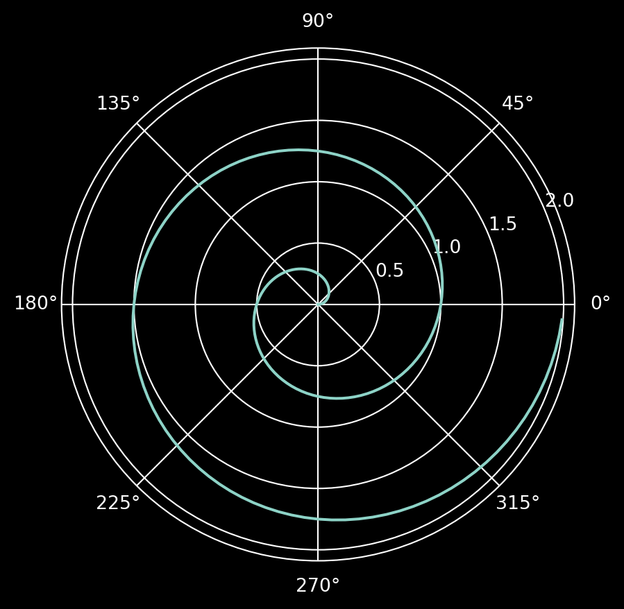
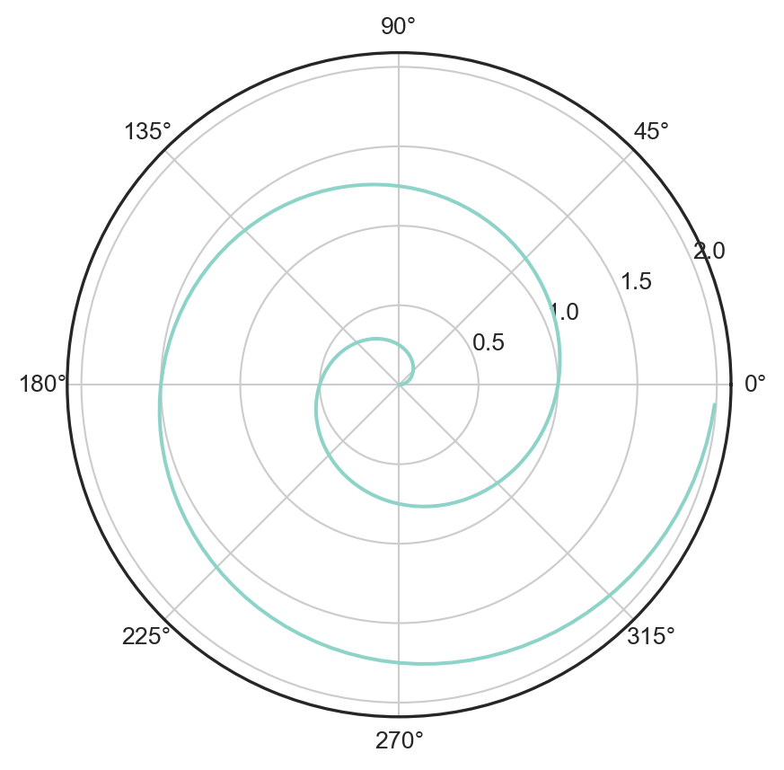
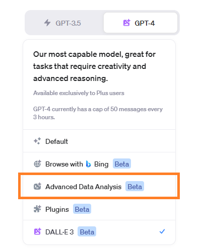

This Is a Testflight
Completely useless presentation
2023-11-12
Disclaimer
This is a testflight. In this slide, I will test some (nice) features of reveal.js for my personal use. The features come mostly from Quarto-Revealjs.
🐈🐈🐈
- 이 PT는 장난질입니다. 내용은 무시하고 기능만 봐주세요.
- Quarto + reveal.js에서 개인적으로 필요한 요소들을 구현했습니다.
- 코드를 상세하게 해설하지 않습니다. 소스와 함께 보시면 구현 방법을 이해하실 수 있습니다.
기본 활용
Note
소스를 보면 쉽게 이해할 것
Getting up
- Turn off alarm
- Get out of bed
- (continued in the next slide… Hit proper key to continue)
- Go to the bathroom
- Make breakfast
해장술은 필요한가?
- 필요하다면 주종은?
- 해장술에 어울리는 안주는?
- 국물이 필요한가?
p의 텍스트가 ul, ol의 텍스트와 달라 보이나요?
Breakfast
- Eat eggs
- Drink coffee
Footnote
- Green 1
- Brown
- Purple
- 한글과 조화롭나요?
Increamental 조정하기
Incremental 디폴트 설정
preamble에 디폴트 옵션으로도 넣을 수 있다.
개별 객체에 대해서도 설정 가능
Incremental activated
- Eat spaghetti
- Drink wine
Inscremental deactivated
- Eat spaghetti
- Drink wine
Slide with a pause
content before the pause
content after the pause
Multicolum
Left column
- This is left column.
- 40% is allocated.
Right column
- 이쪽은 오른쪽 열입니다.
- 60%가 할당되어 있지요!
Page w/o {.smaller}
- This is normal
- 이게 보통 크기
Page w {.smaller}
- This is smaller
- 이게 작은 크기
스크롤이 가능한 슬라이드
- Bullet number 1
- Bullet number 2
- Bullet number 3
- Bullet number 4
- Bullet number 5
- Bullet number 6
- Bullet number 7
- 총알 넘버 8
- 총알 넘버 9
- 총알 넘버 10
- 총알 넘버 11
- 총알 넘버 12
탭셋을 적용해보자.
\(\rm\LaTeX\) 수식 표현을 테스트합니다.
\[ \begin{aligned} \dot{x} & = \sigma(y-x) \\ \dot{y} & = \rho x - y - xz \\ \dot{z} & = -\beta z + xy \end{aligned} \]
\[ \begin{bmatrix} 1 & x & 0 \\ 0 & 1 & -1 \end{bmatrix}\begin{bmatrix} 1 \\ y \\ 1 \end{bmatrix} =\begin{bmatrix} 1+xy \\ y-1 \end{bmatrix}. \]
인라인 수식은 잘 들어갑니꽈~ \(y_i = \alpha + \beta x_i\)는 회귀방정식이란 말이요~
수식 표현을 테스트합니다.
Note
{.smaller}을 슬라이드 타이틀에 적용한 경우
\[ \begin{aligned} \dot{x} & = \sigma(y-x) \\ \dot{y} & = \rho x - y - xz \\ \dot{z} & = -\beta z + xy \end{aligned} \]
\[ \begin{bmatrix} 1 & x & 0 \\ 0 & 1 & -1 \end{bmatrix}\begin{bmatrix} 1 \\ y \\ 1 \end{bmatrix} =\begin{bmatrix} 1+xy \\ y-1 \end{bmatrix}. \]
인라인 수식은 잘 들어갑니꽈~ \(y_i = \alpha + \beta x_i\)는 회귀방정식이란 말이요~
폰트 적용하기
sample css
.qmd파일과 같은 위치에.css파일을 두고, 문서 앞의 YAML에서 해당 파일을 로드하면 된다.- 폰트를 로딩하고 적용하는 방법은 대체로 비슷하다. 이 문서에 적용된
format.scss를 보자.- 1-3 번 라인이 폰트를 입력하는 명령이다.
- 나머지 아래는 css 양식, 즉 PT의 표시 항목 별로 폰트, 크기 및 특성을 지정한다.
@import url("https://cdn.jsdelivr.net/gh/wan2land/d2coding/d2coding-ligature-subset.css");
@import url("https://cdn.jsdelivr.net/gh/sunn-us/SUIT/fonts/static/woff2/SUIT.css");
@import url("https://cdn.jsdelivr.net/gh/sunn-us/SUITE/fonts/static/woff2/SUITE.css");
/*-- scss:rules --*/
.reveal h1,
.reveal h2,
.reveal h3,
.reveal h4,
.reveal h5,
.reveal h6 {
font-family: 'SUITE', sans-serif !important;
/* text-shadow: -1px -1px 0 rgba(0, 0, 0, .3); */
font-weight: 750;
}
.reveal section p {
font-family: 'SUIT', sans-serif !important;
font-size: 90%;
}
.reveal section pre code {
font-family: 'D2Coding', monospace !important;
font-size: 90%;
}
.reveal ul,
.reveal li,
.reveal ol {
font-family: 'SUIT', sans-serif !important;
font-size: 95%;
}
.reveal code{
font-family: 'D2Coding', monospace !important;
font-size: 95%;
}백그라운드 활용하기
Slide, aquamarine
This changes color of background!
크기 지정 벽지
This slide’s background image will be sized to 100px and repeated.
꽉찬 벽지 I
background-size="cover": 벽지를 슬라이드에 맞춘다. 그림은 임의로 확대된다.
꽉찬 벽지 II
background-size="contain": 벽지를 슬라이드에 채워넣게 원본 그림 크기를 유지한다.
(A slide with no title)
(Another slide with no title)
How to use code
Use env
- 코드를 실행하기 위해서는 ’환경’을 쓰는 게 좋다.
- python의 env를 쓰든 conda env를 쓰든 필요한 것을 쓰자.
VS Code Extension이 아직까지 conda 환경을 제대로 지원하지 않는다.- 이제 잘 지원한다!
- 문서 생성시
F1 > Python 인터프리터 선택으로 파이썬 실행 환경을 지정하자. - conda를 쓴다면 conda 환경을, venv를 쓰면 해당 환경을 잡아주자.
- pixi를 쓴다면, 별도의 폴더 선택을 통해
.pixi > env > bin > python을 지정하면 된다.
- 문서 생성시
- 이 슬라이드처럼 다크 테마를 쓸 경우 그림 표시에 문제가 있을 수 있다.
- 그림 표현 역시 다크 테마에 맞추거나 (
Testing Code I) - 그림을 표현할 때는 적절한 밝은 테마를 쓰는 것이다. (
Testing Code II)
- 그림 표현 역시 다크 테마에 맞추거나 (
Testing Code I
#| echo: true
#| layout: [-5, 60, -5]
#| fig-size: [10,10]
#| fig-cap: "A line plot on a polar axis"
#| cap-align: center
import numpy as np
import matplotlib.pyplot as plt
plt.style.use('dark_background')
r = np.arange(0, 2, 0.01)
theta = 2 * np.pi * r
fig, ax = plt.subplots(subplot_kw={"projection": "polar"})
ax.plot(theta, r)
ax.set_rticks([0.5, 1, 1.5, 2])
ax.grid(True)
plt.show()plt.style.use('dark_background'): 다크 모드에 맞춘 스타일 설정- 한 턴 진행 후 아래 스크롤을 해서 결과를 확인!
Testing Code II
#| echo: true
#| label: fig-polar-2
#| fig-cap: "A line plot on a polar axis wth customized style"
import numpy as np
import matplotlib.pyplot as plt
plt.style.use('seaborn-v0_8-white')
#plt.rcParams["figure.figsize"] = (6,6)
r = np.arange(0, 2, 0.01)
theta = 2 * np.pi * r
fig, ax = plt.subplots(subplot_kw={"projection": "polar"})
ax.plot(theta, r)
ax.set_rticks([0.5, 1, 1.5, 2])
ax.grid(True)
plt.show()plt.style.use('seaborn-v0_8-white'): 적절한 백색 스타일

Advanced Techniques
css 적용하기
슬라이드 내에서 ::: 블록 지정 후에 css를 적용할 수 있다.
위와 같이 적용하면 슬라이드 요소의 일부분에 css를 적용할 수 있다.
This slide’s background image fits the screen.
“슬라이드 타이틀 태그(##)뒤에 style로 css 적용하자.”
동영상 임베딩
이렇게 엠베딩이 가능하다. 🔗 참고.
백그라운드 동영상 재생
Ted Chiang, “A blurry JPEG of the web”
그림으로 링크걸기
URL 프리뷰
yml 설정에서 preview-links: true를 설정해둔다.
- 페이지 안에서 링크가 열리는 장점이 있다.
- 제대로 열리지 않는 페이지가 있다.
layout 쓰기
Advanced Data Analysis. GO 🔗

link 뒤에 target="_blank"를 붙이면 새 창에서 열린다.
github publish
embed-resources: true설정해야 퍼블리시에 문제가 없다.- 깃헙 페이지스의 퍼블리시 방식이 바뀌었다. actions에서 자동화하거나
docs에 파일을 다 넣고 퍼블리시 하는 방식이다. docs에 넣고 퍼블리시 하는 방식을 권장한다. 🔗 참고하자.
End of Document
TEST FOR FOOTER!